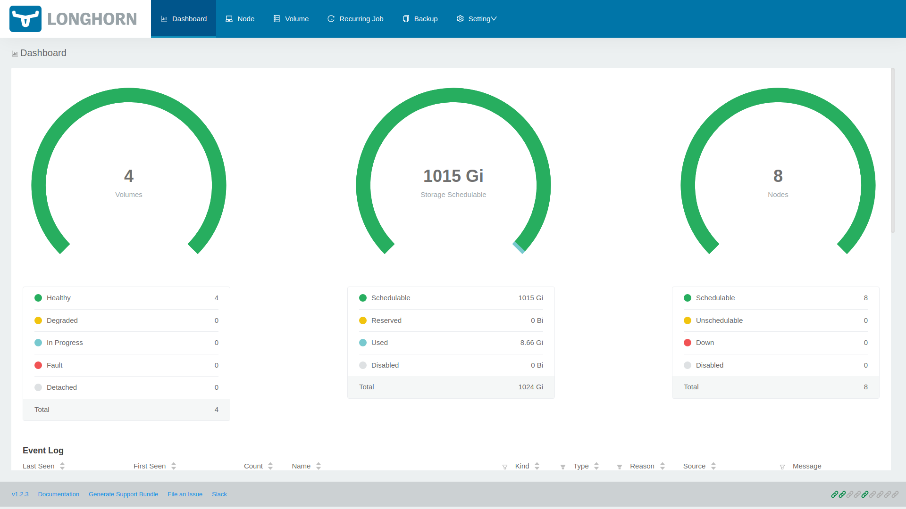

自宅インフラ環境の紹介 in 2022
アーキテクチャ
EdgerRouter X
DNSフォワーディング
LANインタフェースからのDNSクエリは、 後述するキャッシュDNSサーバにフォワードするように設定。
ポートフォワーディング
WANインターフェス pppoe0 に来たHTTP/HTTPS宛のパケットは、 後述するリバースプロキシサーバにフォワードするように設定。
DNSサーバ
4台のDNSサーバが稼働。
ns1.home.arpa
ゾーン “home.arpa." を管理するプライマリ権威DNSサーバ。
ns2.home.arpa
ゾーン “home.arpa.” を管理するセカンダリ権威DNSサーバ。 ゾーン転送によって ns1.home.arpa からゾーン情報を取得。
dns.k8s.home.arpa
ゾーン “hoem.arpa." を管理する権威DNSサーバによって委任された、 ゾーン “k8s.home.arpa." を管理する権威DNSサーバ。
ns-cache.home.arpa
キャッシュDNSサーバ。
リバースプロキシサーバ
本ブログ公開用のリバースプロキシサーバ。
後述するラズパイ Kubernetes 上で稼働している本ブログ用のWebサーバを外部公開する役割を担う。
また、本ブログ用ドメインのSSL設定も担う。
監視サーバ
EdgeRouter や DNSサーバ、ラズパイ Kubernetes など、本環境で稼働しているサーバの監視を担う。
Prometheus + 各種Exporter で構築しており、ダッシュボードには Grafana を利用。
Alertmanager や Pushgateway も構築しているが、 アラートルールの設定やPushgatewayの利用などはおいおい行う予定。
NFSサーバ
後述する Longhorn のバックアップストアとして稼働。
Wi-Fiルータ
tp-link Wi-Fiルータ Archer AX73 https://www.tp-link.com/jp/home-networking/wifi-router/archer-ax73/
ブリッジモードで動作
ラズパイ Kubernetes
USB接続のSSDを使用したRaspberry Pi 4 Model B 8GB に The Hard Way で構築。
コントロールプレーン3台とノード5台で構成。
Kubernetes のデータストアである etcd は、 コントロールプレーンに併設し、etcd クラスタを構成。
また、 kube-apiserver 用のロードバランサもコントロールプレーンに併設し、 HAPorxy + Keepalived で構築。
$ kubectl get nodes -o wide
NAME STATUS ROLES AGE VERSION INTERNAL-IP EXTERNAL-IP OS-IMAGE KERNEL-VERSION CONTAINER-RUNTIME
control-plane-1.k8s.home.arpa Ready control-plane,etcd,node 5d23h v1.23.1 192.168.114.11 <none> Ubuntu 20.04.3 LTS 5.4.0-1047-raspi containerd://1.5.5
control-plane-2.k8s.home.arpa Ready control-plane,etcd,node 5d23h v1.23.1 192.168.114.12 <none> Ubuntu 20.04.3 LTS 5.4.0-1047-raspi containerd://1.5.5
control-plane-3.k8s.home.arpa Ready control-plane,etcd,node 5d23h v1.23.1 192.168.114.13 <none> Ubuntu 20.04.3 LTS 5.4.0-1047-raspi containerd://1.5.5
node-1.k8s.home.arpa Ready node 5d23h v1.23.1 192.168.114.14 <none> Ubuntu 20.04.3 LTS 5.4.0-1047-raspi containerd://1.5.5
node-2.k8s.home.arpa Ready node 5d23h v1.23.1 192.168.114.15 <none> Ubuntu 20.04.3 LTS 5.4.0-1047-raspi containerd://1.5.5
node-3.k8s.home.arpa Ready node 5d23h v1.23.1 192.168.114.16 <none> Ubuntu 20.04.3 LTS 5.4.0-1047-raspi containerd://1.5.5
node-4.k8s.home.arpa Ready node 5d23h v1.23.1 192.168.114.17 <none> Ubuntu 20.04.3 LTS 5.4.0-1047-raspi containerd://1.5.5
node-5.k8s.home.arpa Ready node 5d23h v1.23.1 192.168.114.18 <none> Ubuntu 20.04.3 LTS 5.4.0-1047-raspi containerd://1.5.5
kube-apiserver
$ for i in `seq 1 3`; \
do echo control-plane-${i}.k8s.home.arpa && \
curl -sk --cacert certs/cacert/kubernetes-ca.pem \
--cert certs/cert/admin.pem \
--key certs/cert/admin-key.pem \
https://control-plane-${i}.k8s.home.arpa:6443/healthz && \
echo; \
done
control-plane-1.k8s.home.arpa
ok
control-plane-2.k8s.home.arpa
ok
control-plane-3.k8s.home.arpa
ok
kube-controller-manager
$ for i in `seq 1 3`; \
do echo control-plane-${i}.k8s.home.arpa && \
curl -sk --cacert certs/cacert/kubernetes-ca.pem \
--cert certs/cert/admin.pem \
--key certs/cert/admin-key.pem \
https://control-plane-${i}.k8s.home.arpa:10257/metrics | grep leader && \
echo; \
done
control-plane-1.k8s.home.arpa
# HELP leader_election_master_status [ALPHA] Gauge of if the reporting system is master of the relevant lease, 0 indicates backup, 1 indicates master. 'name' is the string used to identify the lease. Please make sure to group by name.
# TYPE leader_election_master_status gauge
leader_election_master_status{name="kube-controller-manager"} 0
control-plane-2.k8s.home.arpa
# HELP leader_election_master_status [ALPHA] Gauge of if the reporting system is master of the relevant lease, 0 indicates backup, 1 indicates master. 'name' is the string used to identify the lease. Please make sure to group by name.
# TYPE leader_election_master_status gauge
leader_election_master_status{name="kube-controller-manager"} 0
control-plane-3.k8s.home.arpa
# HELP leader_election_master_status [ALPHA] Gauge of if the reporting system is master of the relevant lease, 0 indicates backup, 1 indicates master. 'name' is the string used to identify the lease. Please make sure to group by name.
# TYPE leader_election_master_status gauge
leader_election_master_status{name="kube-controller-manager"} 1
kube-scheduler
$ for i in `seq 1 3`; \
do echo control-plane-${i}.k8s.home.arpa && \
curl -sk --cacert certs/cacert/kubernetes-ca.pem \
--cert certs/cert/admin.pem \
--key certs/cert/admin-key.pem \
https://control-plane-${i}.k8s.home.arpa:10259/metrics | grep leader && \
echo; \
done
control-plane-1.k8s.home.arpa
# HELP leader_election_master_status [ALPHA] Gauge of if the reporting system is master of the relevant lease, 0 indicates backup, 1 indicates master. 'name' is the string used to identify the lease. Please make sure to group by name.
# TYPE leader_election_master_status gauge
leader_election_master_status{name="kube-scheduler"} 1
control-plane-2.k8s.home.arpa
# HELP leader_election_master_status [ALPHA] Gauge of if the reporting system is master of the relevant lease, 0 indicates backup, 1 indicates master. 'name' is the string used to identify the lease. Please make sure to group by name.
# TYPE leader_election_master_status gauge
leader_election_master_status{name="kube-scheduler"} 0
control-plane-3.k8s.home.arpa
# HELP leader_election_master_status [ALPHA] Gauge of if the reporting system is master of the relevant lease, 0 indicates backup, 1 indicates master. 'name' is the string used to identify the lease. Please make sure to group by name.
# TYPE leader_election_master_status gauge
leader_election_master_status{name="kube-scheduler"} 0
etcd
$ etcdctl endpoint status \
--write-out=table \
--endpoints=etcd-1.k8s.home.arpa:2379,etcd-2.k8s.home.arpa:2379,etcd-3.k8s.home.arpa:2379 \
--cacert certs/cacert/etcd-ca.pem \
--cert certs/cert/etcd-healthcheck-client.pem \
--key certs/cert/etcd-healthcheck-client-key.pem
+---------------------------+------------------+---------+---------+-----------+------------+-----------+------------+--------------------+--------+
| ENDPOINT | ID | VERSION | DB SIZE | IS LEADER | IS LEARNER | RAFT TERM | RAFT INDEX | RAFT APPLIED INDEX | ERRORS |
+---------------------------+------------------+---------+---------+-----------+------------+-----------+------------+--------------------+--------+
| etcd-1.k8s.home.arpa:2379 | fdcfe469e2ea5c2f | 3.5.1 | 13 MB | false | false | 4 | 2002684 | 2002684 | |
| etcd-2.k8s.home.arpa:2379 | 190c90c8c6646854 | 3.5.1 | 13 MB | false | false | 4 | 2002684 | 2002684 | |
| etcd-3.k8s.home.arpa:2379 | c445fc3c8ea2c548 | 3.5.1 | 13 MB | true | false | 4 | 2002685 | 2002685 | |
+---------------------------+------------------+---------+---------+-----------+------------+-----------+------------+--------------------+--------+
MetalLB
ベアメタル環境の Kubernetes において、 Service リソースで type: LoadBalaner を使用するために導入。
これにより、Service リソースにIPアドレスが付与され、 Kubernetes クラスタ外からでも Kubernetes上で稼働しているサービスにアクセスすることができる。
L2モードとBGPモードがサポートされているが、 EdgeRouter X がBGPに対応しているのでBGPモードで稼働。
apiVersion: v1
kind: ConfigMap
metadata:
namespace: metallb-system
name: config
data:
config: |
peers:
- my-asn: 65002
peer-asn: 65001
peer-address: 192.168.114.254
address-pools:
- name: my-ip-space
protocol: bgp
addresses:
- 192.168.115.1-192.168.115.254
ubnt@edgerouter-x:~$ show ip bgp summary
BGP router identifier 192.168.114.254, local AS number 65001
BGP table version is 14
2 BGP AS-PATH entries
0 BGP community entries
32 Configured ebgp ECMP multipath: Currently set at 32
1 Configured ibgp ECMP multipath: Currently set at 1
Neighbor V AS MsgRcv MsgSen TblVer InQ OutQ Up/Down State/PfxRcd
192.168.114.11 4 65002 123 114 14 0 0 00:55:28 11
192.168.114.12 4 65002 123 116 14 0 0 00:55:27 11
192.168.114.13 4 65002 123 116 14 0 0 00:55:25 11
192.168.114.14 4 65002 123 115 14 0 0 00:55:19 11
192.168.114.15 4 65002 123 115 14 0 0 00:55:26 11
192.168.114.16 4 65002 123 116 14 0 0 00:55:27 11
192.168.114.17 4 65002 123 116 14 0 0 00:55:27 11
192.168.114.18 4 65002 123 115 14 0 0 00:55:26 11
Total number of neighbors 8
Total number of Established sessions 8
ubnt@edgerouter-x:~$ show ip route
Codes: K - kernel, C - connected, S - static, R - RIP, B - BGP
O - OSPF, IA - OSPF inter area
N1 - OSPF NSSA external type 1, N2 - OSPF NSSA external type 2
E1 - OSPF external type 1, E2 - OSPF external type 2
> - selected route, * - FIB route, p - stale info
IP Route Table for VRF "default"
K *> 0.0.0.0/0 [0/0] via pppoe0
C *> xxx.xxx.xxx.xxx/32 is directly connected, pppoe0
C *> 127.0.0.0/8 is directly connected, lo
C *> 192.168.110.0/24 is directly connected, eth0
C *> 192.168.111.0/24 is directly connected, eth1
C *> 192.168.112.0/24 is directly connected, eth2
C *> 192.168.113.0/24 is directly connected, eth3
C *> 192.168.114.0/24 is directly connected, eth4
B *> 192.168.115.1/32 [20/0] via 192.168.114.18, eth4, 00:56:06
*> [20/0] via 192.168.114.17, eth4, 00:56:06
*> [20/0] via 192.168.114.16, eth4, 00:56:06
*> [20/0] via 192.168.114.15, eth4, 00:56:06
*> [20/0] via 192.168.114.14, eth4, 00:56:06
*> [20/0] via 192.168.114.13, eth4, 00:56:06
*> [20/0] via 192.168.114.12, eth4, 00:56:06
*> [20/0] via 192.168.114.11, eth4, 00:56:06
ExternalDNS
IPアドレスで接続 やはりドメイン
CoreDNS
etcd
external-dns
apiVersion: v1
kind: Service
metadata:
name: nginx-svc-lb
labels:
app.kubernetes.io/name: nginx-svc-lb
annotations:
external-dns.alpha.kubernetes.io/hostname: nginx.k8s
spec:
type: LoadBalancer
ports:
- protocol: TCP
port: 80
targetPort: 80
selector:
app.kubernetes.io/name: nginx
$ kubectl get all
NAME READY STATUS RESTARTS AGE
pod/nginx-795566ddcd-6wxsd 1/1 Running 0 5h35m
NAME TYPE CLUSTER-IP EXTERNAL-IP PORT(S) AGE
service/kubernetes ClusterIP 10.96.0.1 <none> 443/TCP 6d13h
service/nginx-svc-lb LoadBalancer 10.96.26.26 192.168.115.2 80:31333/TCP 5h35m
NAME READY UP-TO-DATE AVAILABLE AGE
deployment.apps/nginx 1/1 1 1 5h35m
NAME DESIRED CURRENT READY AGE
replicaset.apps/nginx-795566ddcd 1 1 1 5h35m
キャッシュDNSサーバに対して、ゾーン “k8s.” は上述した CoreDNS にフォワードするように設定している。
$ dig nginx.k8s
; <<>> DiG 9.11.3-1ubuntu1.16-Ubuntu <<>> nginx.k8s
;; global options: +cmd
;; Got answer:
;; ->>HEADER<<- opcode: QUERY, status: NOERROR, id: 996
;; flags: qr rd ra; QUERY: 1, ANSWER: 1, AUTHORITY: 0, ADDITIONAL: 1
;; OPT PSEUDOSECTION:
; EDNS: version: 0, flags:; udp: 65494
;; QUESTION SECTION:
;nginx.k8s. IN A
;; ANSWER SECTION:
nginx.k8s. 30 IN A 192.168.115.2
;; Query time: 12 msec
;; SERVER: 127.0.0.53#53(127.0.0.53)
;; WHEN: Tue Feb 08 07:42:20 JST 2022
;; MSG SIZE rcvd: 54
Longhorn

InfluxDB
監視サーバ Prometheus の長期記憶ストレージ(LTS)として稼働。
$ kubectl -n influxdb get all,pvc
NAME READY STATUS RESTARTS AGE
pod/influxdb-dp-8447dc855d-hd7tt 2/2 Running 0 3d5h
NAME TYPE CLUSTER-IP EXTERNAL-IP PORT(S) AGE
service/influxdb-exporter-svc-lb LoadBalancer 10.100.221.224 192.168.115.8 9122:32042/TCP 3d5h
service/influxdb-svc-lb LoadBalancer 10.105.178.235 192.168.115.7 8086:31480/TCP 3d5h
NAME READY UP-TO-DATE AVAILABLE AGE
deployment.apps/influxdb-dp 1/1 1 1 3d5h
NAME DESIRED CURRENT READY AGE
replicaset.apps/influxdb-dp-8447dc855d 1 1 1 3d5h
NAME STATUS VOLUME CAPACITY ACCESS MODES STORAGECLASS AGE
persistentvolumeclaim/influxdb-pvc Bound pvc-65dfb8bd-40fa-498d-95d5-3e36123be270 128Gi RWO longhorn 3d5h
sosomasox.com
本ブログもkubernetes上で
commpost.sosomasox.com
コメント投稿システム。
ブログのフッタに